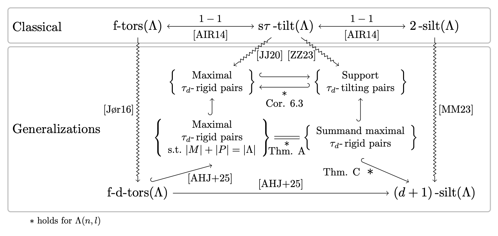

\(\tau_d\)-tilting for Nakayama Algebras
This page is meant to serve as a supplement to the paper \(\tau_d\)-tilting theory for Nakayama algebras Link below (arXiv:2410.19505) [RV24].
- Basic information on \(\tau_d\)-rigid pairs in \(\Lambda(n,l)\) and an interactive AR-quiver to construct \(\tau_d\)-rigid pairs of \(\Lambda(n,l)\) is available here: Construct your own pair.
- Basic information of mutation of summand-maximal \(\tau_d\)-rigid pairs, examples and an interactive AR-quiver for you to mutate can be found here: Mutate pairs.
- Basic information on the \(d\)-torsion classes of \(\Lambda(n,l)\) and an interactive AR-quiver to construct \(d\)-torsion classes of \(\Lambda(n,l)\) is available here: Construct your own class.
- References cited throughout the page is available here: References.